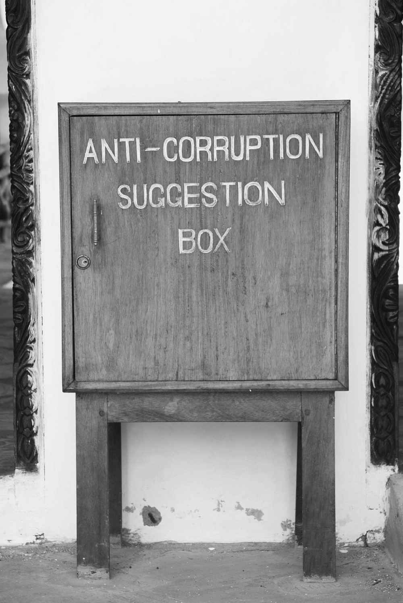
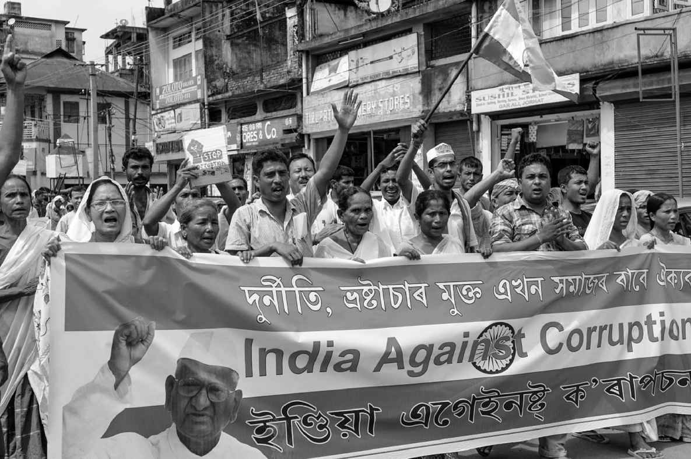

国家只是许多能在遏制腐败方面发挥作用的行为者之一。在最后一章中，我们将考察国际组织、商业企业和民间社会可以做些什么，随后再评估反腐的总体努力。
国际组织
如上所述，只是在过去20年左右的时间里，国际社会才将注意力集中在腐败问题上。一个原因是，西方虽然自1990年代以来一直是推动反腐的主要力量，在冷战期间对推动国际反腐议程却没有什么兴趣。特别是美国，它并不希望由于批评盟国的腐败而让对方感到不安；美国也不想批评发展中国家，这样可能把它们推向苏联阵营。但一旦冷战结束，便不再需要遮遮掩掩了。1990年代初，美国开始大声地抱怨，其企业公司的海外业务正被其他发达国家的公司夺走，这些国家都没有任何与《反海外腐败法》类似的立法（见第六章）。简言之，美国人想要在国际商业领域有更公平的竞争环境。
正是在此背景下，经济合作与发展组织的《国际商业交易中贿赂的应对建议》于1994年发布了，在许多人看来这是国际组织做出的首次重要尝试。但如其名称所示，这只是一套建议；毕竟，美国人也没有频繁祭出《反海外腐败法》。
到1990年代末，部分由于透明国际的影响日益扩大，以及世界银行在1995年任命詹姆斯·沃尔芬森担任行长后开始认真应对腐败，国际社会越来越意识到腐败是一个严重问题。经合组织提出的建议受到更多重视，以反腐公约的形式于1997年通过，并于1999年生效。该公约确立了“具有法律约束力的标准”：批准公约的国家必须通过或修改国内立法来与该公约保持一致。
经合组织公约的一个具体效果是，包括澳大利亚、德国和荷兰在内的多个发达国家，不得不停止为国内公司向海外支付的商业贿赂减免税收。所有34个经合组织成员国加上另外7个国家（阿根廷、巴西、保加利亚、哥伦比亚、拉脱维亚、俄罗斯和南非）现在都加入了该公约，自1999年以来公约已经多次加强，特别是在2009年和2011年。经合组织自称公约是“第一个也是唯一一个着力于贿赂交易‘供给侧’的国际反腐工具”——意思是说它关注的是商界在提供或支付贿赂方面的不当行为，而不是受贿或索贿的官员。
金融行动特别工作组（FATF）与经合组织密切相关。该工作组是在包括几个经济大国在内的七国集团的倡议下于1989年设立的，以打击洗钱为宗旨。最初，它的打击重点是有组织犯罪。主要在“911·事件”的推动下，其关注领域很快扩大到恐怖主义，随后又涵盖腐败领域。从2010年开始，该工作组与20国集团反腐工作组就如何最有效地打击与腐败相关的洗钱活动密切合作，自此以后，其反腐力度得到加强。2011年以来，金融行动特别工作组已经发布了多份这方面的报告。
经合组织公约仅适用于世界上约五分之一的国家和地区，但这些国家和地区分布在全球各地。此外，自1990年代中期以来，已经通过了若干区域性反腐公约。第一个是1996年美洲国家组织35个成员国通过的《美洲反腐败公约》。时间更近的2003年，非洲联盟53个成员国通过了它们的《防止和打击腐败公约》（2006年生效）。
一般认为欧盟从1995年开始重视腐败问题，1997年制定了一项针对欧盟官员及其成员国官员的反腐公约。其后是2003年的《全面反腐败政策》。此外，欧盟还施加了有针对性的“条件限制”。例如，在1997年公布扩充成员国的路线图（“2000年议程”）时，针对每个申请成为成员国的后共产主义国家，欧盟对其必须满足的条件进行了个别分析。十项个别分析中每一项的“政治标准”部分规定的唯一问题，都是需要加强对腐败的打击。
另一个欧洲机构，即规模更大的欧洲委员会（成员国有47个，包括白俄罗斯和梵蒂冈之外的所有欧洲国家），在1990年代末和21世纪初通过了一些以反腐为目标的公约和其他文件。第一份是1997年的《关于反腐败的二十项指导原则》，1999年又颁布了针对腐败的刑法和民法两项公约；前者在2003年得到加强（2005年生效）。欧洲委员会还就公职人员行为守则（2000）和政治筹款（2003）提出了建议。
欧洲委员会对成员国约束力有限，但该委员会为监督各国对其反腐文件的执行情况而于1999年设立的机构——反腐败国家联合会（GRECO）——却小有成就。2012年，该联合会开始分析腐败的性别维度，包括腐败对男性和女性的不同影响，受到反腐人员越来越多的重视。最后，欧洲委员会（有时与欧盟一起）已经针对特定国家和地区实施了若干反腐计划。这些项目包括1990年代后期的“章鱼”计划、俄罗斯的—RUCOLA（20062007）和PRECOP（2013—2015）计划，以及摩洛哥和突尼斯的SNAC—南方计划（2012—2014）；其中一些计划表明，欧洲委员会的活动范围有时会越出欧洲以外。
在所有反腐公约中，得到最多国家认可的是《联合国反腐败公约》（UNCAC）。该公约于2003年底开放供签署，2005年12月生效，是一份相对较新的文件；到2014年4月，《联合国反腐败公约》已有140个签署国和171个缔约国。公约被联合国自称为世界上第一份具有法律约束力的反腐文件（如之前提到的，经合组织公约只有41个签署国），并被一些人视为反腐文件的“黄金标准”，尽管其中并未对腐败给出实际定义。
国际执法机构也在打击腐败方面发挥着作用。作为其中主要的一个，国际刑警组织有自己的专家组——国际刑警组织腐败问题专家组（IGEC），在刑警组织于1998年举行第一次反腐会议后不久成立。该专家组已经制定了一套“全球标准”，特别针对减少警察队伍的腐败。国际刑警组织将其主要的反腐角色之一定位为资产追回，即将被盗资产返还给受害国。近年来，它一直紧盯体育领域的腐败，比如打假球现象。
到目前为止，我们关注的重点主要是预防性和惩罚性的方法。其实，国际组织也可以发挥激励作用。例如，对荷兰采取的打击国会议员和法官腐败的做法，欧洲委员会就于2013年表示了称许。
多数国际组织近年来都提出了减少腐败的政策和措施，世界贸易组织则被批评在这方面做得太少。世贸组织成立于1995年，于1996年开始考虑在公共采购领域减少腐败的方法；但外界评论人士过去一直声称，世贸组织没有取得什么进展。尤其是，透明国际负责人彼得·艾根于2003年发表了一篇文章，公开批评世贸组织在打击采购腐败方面止步不前。世贸组织于2014年生效的《政府采购协定（修订版）》提及了腐败，但只是浮光掠影，基本上是象征性的。
国际商会也鼓励世贸组织采取更强硬的立场，敦促其将腐败列为被禁止的非关税壁垒之一，不过世贸组织并未这么做。学者帕蒂德·阿莱认为，世贸组织强调国际贸易要更为透明，这有助于反腐斗争；菲利普·M.尼科尔斯则正确地指出，世贸组织原则上比多数国际组织在打击国际贸易中的腐败方面处于更有利地位。话虽如此，如果潜力没有发挥出来，这一点就没有什么意义。世贸组织所采取的“由成员驱动”来协商一致的做法，使它在腐败等许多重要问题上不过是只纸老虎。
银行与跨国公司
马克斯·韦伯在20世纪初认为，对国家官僚机构的最好制衡，包括遏制腐败，是存在一个独立于国家的强大的商业阶层。遗憾的是，许多国家都政商交织，难分难解，这对遏制腐败来说可不是好兆头。但是原则上，银行和企业都可以在打击腐败方面发挥重要作用。
许多人认为，国际货币基金组织和世界银行这两家国际金融机构履行着基本类似的职能，事实并非如此。在反腐领域，世界银行比国际货币基金组织活跃得多。后者由于强调善治而鼓励透明，但其在腐败方面的实际重点主要是打击洗钱。自1990年代中期以来，世界银行则一直致力于通过若干途径减少腐败。本书第三章考察了其确定和衡量腐败的创新方法；自1999年以来，世界银行也一直禁止（即列入黑名单）在国际贸易中做出各种不端行为（包括规避制裁和行事腐败）的公司和个人。自2011年以来，世界银行通过与亚洲开发银行、欧洲复兴开发银行和美洲开发银行将黑名单联网，加强了这种禁止措施的威慑力。
世界银行和货币基金组织采取的最有争议的做法之一，是取消或暂停向腐败国家发放贷款。1997年，两家机构就曾因此而暂停向肯尼亚发放贷款。更近的一个例子是，由于一家加拿大工程公司涉嫌腐蚀孟加拉国官员，世界银行于2012年取消了向孟加拉国提供的12亿美元贷款，这笔贷款原本会用于该国一条最长桥梁的建设。
与其他国际组织一样，世界银行在批评之外有时也会发出赞许。例如，2002年它就曾祝贺罗马尼亚为减少司法部门的腐败所取得的成效（尽管欧盟后来批评罗马尼亚在打击法官腐败方面还是做得太少）。
批评之下，许多私人银行已采取措施打击洗钱，这可能会对高层次腐败影响尤甚。2000年，11家主要银行联手创立了沃尔夫斯堡集团，制定了一套反洗钱原则。该集团此后还继续制定原则和指导方针，其中许多都涉及银行业的各个方面（例如代理银行业务和受益所有权），这些方面是打击洗钱活动的重要内容；只是，就本书的导论性质来说，其专业性太强了。
已经有人注意到，许多人现在把企业公司也纳入可能腐败（以区别于实际的腐败主体）的范畴。无论是采用这种宽泛的腐败定义，还是采用以国家官员为重点的狭义界定，毫无疑问，私人企业是全球腐败的一个主要角色。西方媒体自新千年开始以来已经大显身手，详细报道了澳大利亚小麦局（总部设在澳大利亚）、SNC兰万灵集团（总部设在加拿大）和其他许多公司的不端行为，但私人企业能够采取和确实采取的反腐行动却难入其法眼。事实上，存在着很多可能性。
近年来，由于一些国家的腐败状况，少数公司或者威胁撤出，或者实际上已经从这些国家撤出。俄罗斯的宜家家居就是前一种情况，而由于保加利亚国内的腐败，联合利华于1997年退出了该国（退出约三年时间）。
近年来，许多私人公司至少象征性地（在某些情况下也是出于真正的关切）通过了“道德守则”，以此表明它们致力于使员工进一步认识到商业关系中诚信的重要。这些守则通常强调贿赂是完全不可接受的。作为一家被曝在过往完全无视道德的跨国公司，西门子的高级管理层自2008年起引入了一项大型合规计划，现在西门子被视为公司洗心革面的典范。
最早自1990年代初以来，越来越多的公司不仅在财务业绩这一传统的“底线”上，而且在社会和环保成就方面提交了年度报告。例如，它们可能赞助了奥运会运动员并减少了运动员们的二氧化碳排放量。这种三重底线——也称为3P方法，即“人、地球和利润”（people,planet,and profit）——通常被称为“可持续性报告”。近年来，一直有人在推动增设第四条底线，即治理，其中包括报告公司为减少贿赂和腐败行为作了哪些努力。这种“四重底线”的倡导者认为，报告第四条底线对公司来说是有好处的，会提高公司声誉。这方面的证据有些杂乱，但一些人断言，声誉不佳的公司将失去市场份额。无论该说法正确与否，许多公司在做出重要决定时的确会考虑“声誉风险”。
公民社会：国内和国际
公民社会的概念可以追溯到亚里士多德，但直到18世纪才成为社会科学研究中的重要概念。从此以后这个词面目模糊，对其确切意思至今仍然存在分歧。由于已经考虑了商业企业的作用，为适应本书主题，我们所分析的公民社会的其他主要组成部分将包括大众媒体、非政府组织和社交媒体。
在运行良好的民主制度中，纸媒和网络媒体都可以在打击腐败方面发挥重要作用。它们可以调查指控并公布结果，直接和间接地向当局施压，让当局深入追究。遗憾的是，许多国家的大众传媒不享有本该拥有的自主权。在描述媒体可以承担的多种角色和具有的多重性质时，罗德尼·蒂芬以犬类譬喻，将它们分为五个可能的类别：看门狗（媒体的理想角色）、戴口罩的看门狗（媒体受到严格限制，约束不仅来自审查制度，还来自诽谤法，这些法律严重偏向被媒体曝出不端行为的人的利益）、宠物狗（媒体甘受政治精英操纵）、狂吠的猎狗（媒体发出很多噪声，经常互相抄袭，但既没有妥当调查案件，也没有发挥建设性作用）和狼（最危险的类型，媒体对指控的调查漫不经心，公布时罔顾责任，从而增强公众愤世嫉俗的情绪并削弱体制的合法性）。
从蒂芬的分类中可以清楚地看出，媒体在打击腐败方面发挥的作用可能有限，甚至是消极的。后者的一个例子，同时也是“戴口罩的看门狗”的一个例子是，俄罗斯在2013年通过了一项法律，禁止媒体公布高级官员家庭成员私人资产的详情。有人指控，莫斯科政治精英中有人以家庭成员（包括儿童）的名义不正当地登记财产，以便隐藏自己的部分财富；无论真相如何，任何设法调查和公布结果的媒体都有可能面临诉讼。
NGO（非政府组织）一词早在1945年便第一次出现，但这个首字母缩略词自1970年代以来才开始普及，自1990年代起则变得越来越为人熟知。非政府组织有许多类型，我们将只考察致力于打击腐败的那一类，其中既有国内的也有国际的。
最著名的国际反腐败非政府组织是设在柏林的透明国际，它是全球组织，但在许多国家有地方分支机构（“国家分支机构”）。其幕后筹划者彼得·艾根，此前一直维持着世界银行在东非的运行，对腐败的地方精英们将本该用来帮助穷人的国际资助据为己有日益愤怒。于是，艾根于1993年创立透明国际，从那时起担任该组织的主席直到2005年。
除了前面章节中讨论的各种腐败指标，透明国际还提供了实用的“工具包”。透明国际深知在各种文化和机构中打击腐败的“一刀切”做法是不恰当的，于是明智地为想要反腐的人和组织确立和解读了各种方法（工具），供其根据自身的需要和情况取用。
透明国际提出的另一个倡议，是自1990年代以来在公共采购中推广“诚信契约”。用透明国际自己的话来说，诚信契约“本质上是发包的政府机构和竞标的公司之间的一份协议，双方同意在合同范围内避免贿赂、串通和其他腐败行为”；这种契约纳入了一种监督体制，非政府组织（通常是当地的透明国际分支机构）将依此设法检验签署国在实践中遵守诚信契约的程度。
另一个国际非政府组织是U4反腐败资源中心，成立于2002年，总部设在挪威卑尔根。该组织与透明国际的工作重点略有不同：它主要帮助（主要是欧洲的）捐助组织减少与其发展援助计划相关的腐败。除此以外，它还与透明国际紧密合作，后者在柏林总部维持着U4的咨询服务。其他非政府组织以及国际性非政府组织联盟包括全球见证组织和全球诚信组织。
世界上多数国家也有许多单个的国内反腐败非政府组织。其中，来自100多个国家的350多个组织通过《联合国反腐败公约》联盟相互关联起来。该联盟成立于2006年，负责协调各种非政府组织的工作，并分享最佳实践经验。另一个全球网络是“发布付费内容”组织，在全球拥有800多个民间社会组织成员，其关注重点是采掘业的腐败和其他玩忽职守行为。
到目前为止，我们关注的重点都是有正式组织的机构，这些机构将反腐作为其首要或主要目标。但有时，比这些机构更强大的是一般公众。普通公民打击腐败的一种简单方法是报告已知或疑似的案件，或者仅仅是提出打击腐败的建议；这通常有一定的技术要求，例如要用到电话或电脑，但并非总有技术门槛（见图6）。另一种方法是公众成员拒绝行贿。遗憾的是，这一点有时说起来容易做起来难：如果自己或家人为了保命而获得医治的唯一方法，是向本该提供免费治疗的医生行贿，那么情有可原的是，许多人都会这么做。

图6 肯尼亚的反腐意见箱：打击腐败也有技术含量不高的方法
此外，还有其他方式可以使公众发挥重要作用。社交媒体在各种领域，包括反腐方面，正变得越来越重要。在俄罗斯，关于腐败问题（特别是公共采购方面）最著名的博客作者是亚历山大·纳瓦尔尼。纳瓦尔尼的批评性博文引起了无数俄罗斯人的共鸣，他本人曾被视为2018年俄罗斯总统的热门人选。在全球层面，脸书网站现在有一项功能，叫“说出腐败政治家和公务员的名字并羞辱他们”。

图7 在全球许多地区，针对腐败的公众抗议越来越常见
在2012年所写的腐败主题的著作中，弗兰克·沃格尔强调了推特的作用，认为这是经历了所谓“阿拉伯之春”的一些国家政治意识得以提高的主要因素，也可能是打击腐败的强大武器。毫无疑问，推特可以迅速动员起数千人抗议各种形式的不公正，包括腐败；推特在近年来发挥了作用，推动多国公民参加针对腐败的大规模抗议活动，包括阿根廷、巴西、保加利亚、印度、泰国、土耳其、乌克兰、美国和许多其他国家（图7）。一些大规模示威促使政权崩溃，另一些则招致了严厉的镇压。不过在后一种情况下，政权通常降低了自己的合法性，使其最终的覆灭更为可期。
对反腐的批评
从本章可以清楚地看出，国际上对腐败的关注只有20年左右的历史。20年间，反腐运动几乎呈指数级增长。然而，这种发展趋势招致了一些人的批评，主要有两个原因。
首先，有些人指责国际反腐运动（至少是其中的一部分）为“文化帝国主义”。毫无疑问，运动的一些方面咄咄逼人，干涉了国家主权。但应当承认，这样做往往是由于该国印象腐败程度高，许多公民义愤填膺同时又感到无能为力。调查显示，一般公众往往感谢外部机构向国内精英施压、让其腐败行为收敛，尤其是在困难人群能由此得到外部援助的情况下。
第二，越来越多的批评者（其中多数是学者）声称，反腐斗争的结果是出现了一个反腐“行业”，它有了既得利益，有动力在反腐领域创造尽可能多的新岗位，使腐败状况看起来尽可能地严重。批评者认为，反腐败非政府组织和国家资助的反腐机构如果在减少腐败方面极为成功，就会面临鸟尽弓藏的局面，从而失去资金甚至遭到解散。从某种意义上说，反腐行业正面临着自身腐败的指责。
这种说法无疑有些道理，却并非无可指摘。例如，只有认定腐败已经最终根除，或者更务实地说，已经永久地 减少到“可控”水平，说反腐机构多余才能成立。在现实世界中，腐败不断改头换面卷土重来，解散为反腐而设立的机构可能会导致其不断以新的形式再生。
在批评反腐行业时，真正的危险是因噎废食。确保反腐机构高效、负责和透明至关重要，但是绝不能忘记腐败所具有的许多消极的、有时甚至是致命的影响。太多的分析人士发出尖锐的批评，却几乎没有提出任何积极的建议来解决这个极为现实的问题。
哪些方法奏效？
在本章和前一章中考察了许多打击腐败的方法之后，我们现在来解决就许多方面来说最为重要的问题：哪些方法是最有效的？遗憾的是，之前概述的每种方法都有缺点；由于篇幅限制，在分析这些方法时不得不有所取舍：这里将集中讨论国际努力的有效性，毕竟上一章已经评估了几种国内方法。那些数量繁多的公约等有没有什么显著效果，还是说它们实际上只是无用的虚文？
尽管欧盟和欧洲委员会有各种针对性的方案，腐败在大多数后共产主义国家仍然是一个严重问题。此外，2014年发表的第一份欧盟诚信体系报告明确指出，由于法规漏洞和道德政策执行不力，欧盟所属机构仍然容易受到腐败的影响。
根据2013年关于经合组织反贿赂公约执行情况的官方报告，“签署公约的40个国家中，有30个国家考虑到自身庞大的出口总额，几乎不会调查和起诉境外贿赂”——真是令人沮丧的结果。日本已批准该公约，但在多个场合都由于在现实中少有作为而受到批评。英国由于在2010年立法中严格反对公司贿赂而受到赞扬，但之前也曾被指在执行经合组织公约方面无甚作为。
此外，还存在倒退的危险。在引入经合组织公约后的第一个十年里，美国和德国证明自己是出色的好公民（到2013年英国和瑞士也有同样表现），利用基于公约的法律起诉了数量众多的国内公司。但是，正如透明国际在对经合组织公约执行情况的年度评估中经常指出的，如果美国和德国这样的“好公民”看到其他国家在履行公约承诺方面无所作为，它们迟早肯定会自问，对自己的国内公司加以惩罚，从而把业务拱手让给对公约口惠而实不至的那些国家的公司，这样做是否公平。如果答案是否定的，它们或许将不会再做模范公民。
就《联合国反腐败公约》而言，直到最近才有监督程序，即从2010年才开始有“第一个五年审查周期”；这项工作要到2015年才能完成，现在断言其成功还为时过早。 [10] 但是，一想到《联合国反腐败公约》自2005年即开始生效，人们必定会质疑，为什么评估其效力需要如此长的时间。而且，世界上一些贸易大国，特别是德国和日本，尚未批准《联合国反腐败公约》。该公约的效力到底有多大？理论上，已经 批准公约的国家若不遵守，可以被诉至法院（联合国国际法院）；而在现实中，国际法院基本上没有执法权。
再来看看世界银行所付出的大量努力：事实已经表明，其跟踪调查能够大大减少腐败。但是，世界银行过去面临的一大批评是，它的那项严厉政策，即一发现重大腐败就取消援助项目，伤害了最需要帮助的人。另一个问题是，其禁止名单的对象主要为个人和小公司；似乎强势跨国公司的不端行为一般能够逃脱处罚，相对弱势的公司和个人却做不到。2011年对世界银行反腐工作进行了一项内部审查，报告表明情况是复杂的。虽然在许多国家加强反腐机构取得了一些成功，但报告发现，世界银行远远没有实现其反腐目标。
所有这些令人失望的事实是否意味着，1990年代以来的反腐斗争本质上是在浪费时间和精力？腐败研究领域肯定有一些“大腕”会有类似的主张。曾在世界银行负责腐败和治理问题分析工作的丹尼尔·考夫曼在2005年总结称，十年的全球反腐努力乏善可陈；2009年，他又声称为反腐做出的努力“不温不火”。在介绍2013年腐败印象指数时，透明国际主席于盖特·拉贝勒指出：“2013年腐败印象指数表明，所有国家在各级政府中仍然面临着腐败的威胁，从颁发地方许可证到执行法律法规都是如此”；根据该指数，近70%的国家得分低于50（范围为0—100分），意味着它们的腐败较为严重。
尽管存在这些令人沮丧的结果和批评，仍有部分 迹象令人鼓舞。在2014年的一本书中，迈克尔·约翰斯顿指出：
此外，U4（在其网站上）声称“在反腐方面很少有证据表明哪些做法有效、为什么有效”的确有几分道理，但比较分析已经揭示了部分 指导原则，不论在哪里，反腐工作要想取得进展，就应该坚持这些原则。最明显的经验之一是，到底是“众人拾柴火焰高”还是“三个和尚没水吃”，这个问题现在有了答案。正如乔·奎指出的，新加坡和中国香港地区在打击腐败方面取得的成功，在很大程度上与它们都拥有单一、强大、独立的反腐机构这一事实有关。在机构繁多的情况下，其职责往往重叠交叉甚至相互冲突，于是导致协调和推诿的难题；通常情况下，还会存在极端低效和资源浪费的情形。
许多分析人士认为，反腐措施最终成功与否取决于政治意愿。这一点就其本身来说是有说服力的，但需要进一步剖析和展开。例如，我们讨论的是谁的 意愿？许多文化和语言中都有“上梁不正下梁歪”的说法，意思是说如果政治精英不能以身作则，腐败就会更甚。从这个意义上说，领导层的意愿似乎极为重要。不过，重要的并不仅仅是他们的意愿。领导层有可能一方面真正致力于打击腐败，同时又对自己下属的官僚机构没有足够的掌控，从而无法将这一意向变为现实。此外，在新自由主义主导的全球化世界中，政治领导人控制跨国公司的力量也是有限的。
因此，对于政治意愿我们现在可以在观点上作一些修正。政治领导人不仅必须真正投入，即具有打击腐败的政治意愿，还必须有能力 贯彻其意愿。此外，涉及的众多方面，包括国家官员、公司企业、国际组织、民间社会和公众中的个体成员，也需要有打击腐败的意愿。这些行动者中的每一个所扮演的角色重要性各不相同，国与国之间也有不同。然而，每一个都不可或缺。
在第六章中我们曾指出，腐败是一个邪恶的问题。它永远不会完全消失：正如塔西佗在数个世纪前所说的，立法者只要制定新的法律来打击欺诈和腐败，狡猾的人几乎立即就会找出办法来规避它们。但是，与某些国家相比，在另一些国家腐败似乎远不是一个问题：例如，那些民主传统强大、法治观念牢固、社会信任发达、民间社会成熟的富裕小国显然腐败较少，说明腐败能够降低到可控水平。
不过，短期前景并不光明。法治和充满活力的民间社会都与运行良好的民主国家有关。世界正义工程的2014年法治指数表明，该年度腐败情况比上一年略有改善，但《经济学人》智库的民主指数（目前可能是世界上整体民主水平最权威的指南，自2007年来几乎每年发布一次）为2011年和2012年写下的两个副标题，分别是“压力下的民主”和“停滞的民主”。此外，基本上没有道德考量的新自由主义意识形态（强调目的重于手段并模糊国家和市场的界限）仍然支配着全球经济，这可不是什么好兆头；不过，科林·克劳奇等学者倒是怀着希望，期待全球金融危机能改变这种状况。反腐之战，任重道远。